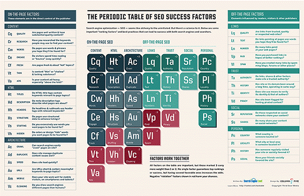

SEO stands for “search engine optimization.” It is the process of getting traffic from the “free,” “organic,” “editorial” or “natural” search results on search engines. All major search engines such as Google, Bing and Yahoo have primary search results, where web pages and other content such as videos or local listings are shown and ranked based on what the search engine considers most relevant to users. Payment isn’t involved, as it is with paid search ads.
For more basic but also in-depth advice, our
Periodic Table Of SEO Success Factors,
shown below, introduces you to all the key concepts you need to know :

You can click on the table to view a larger version of it. You can
download a copy to print for easy
reference!
As a companion to the table,
Search Engine Land’s Guide To SEO explains the ranking factors in more depth,
in a tutorial providing tips and advice on implementing them.
You can view a condensed version of the SEO Table explained in a quick
presentation format here:
Links to the entire guide are shown below
(start at the beginning, and each page will take you to the next) :